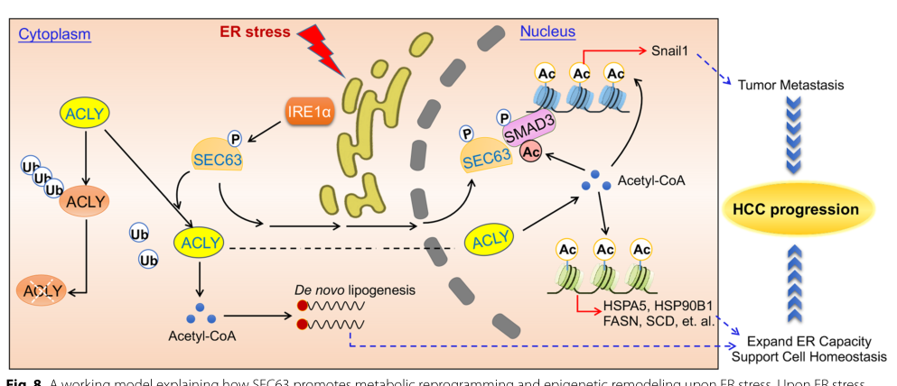

SEC63 (also DNAJC23) is a multi-pass endoplasmic reticulum membrane protein and an auxiliary component of the Sec61 translocon. It contains a luminal J-domain (DnaJ/Hsp40-type) and two Sec63 domains. Together with SEC62 it forms the SEC62-SEC63 subcomplex that supports cotranslational and post-translational translocation of precursor polypeptides into the ER. Its defining mechanism is co-chaperone activity, in which the luminal J-domain recruits and stimulates the ATPase cycle of the ER Hsp70 chaperone BiP (HSPA5), positioning BiP on incoming polypeptides at the translocon to drive and gate their translocation into the ER lumen. SEC63 cooperates with SEC62 and BiP in importing small presecretory proteins with short, apolar signal peptides, and is required for efficient biogenesis and trafficking of polycystin-1 (PKD1). SEC63 is widely expressed with high levels in liver, and loss-of-function variants cause autosomal dominant polycystic liver disease (PCLD2).
| GO Term | Evidence | Action | Reason |
|---|---|---|---|
|
GO:0003723
RNA binding
|
IBA
GO_REF:0000033 |
KEEP AS NON CORE |
Summary: RNA binding is not an established core function of SEC63, an ER-membrane translocon J-domain co-chaperone. This phylogenetic (IBA) annotation appears propagated from high-throughput mRNA-interactome captures rather than a demonstrated, conserved sequence-specific RNA-binding activity; the J-domain and Sec63 domains are not canonical RNA-binding modules.
Reason: RNA binding is not a demonstrated core function of SEC63; the IBA propagation likely derives from incidental mRNA-interactome captures (consistent with translocon proximity to translating ribosomes/mRNA) rather than a sequence-specific RNA-binding activity, so it is retained but marked non-core.
Supporting Evidence:
file:human/SEC63/SEC63-uniprot.txt
Mediates cotranslational and post-translational transport of certain precursor polypeptides across endoplasmic reticulum (ER)
|
|
GO:0006614
SRP-dependent cotranslational protein targeting to membrane
|
IBA
GO_REF:0000033 |
ACCEPT |
Summary: SEC63 participates in cotranslational translocation of precursors into the ER as a translocon-associated co-chaperone, consistent with the conserved family role.
Reason: Core biological process; SEC63 supports cotranslational transport of precursor polypeptides across the ER membrane.
Supporting Evidence:
file:human/SEC63/SEC63-uniprot.txt
Mediates cotranslational and post-translational transport of certain precursor polypeptides across endoplasmic reticulum (ER)
|
|
GO:0006620
post-translational protein targeting to endoplasmic reticulum membrane
|
IBA
GO_REF:0000033 |
ACCEPT |
Summary: SEC63 mediates post-translational targeting/translocation of precursors to the ER membrane; conserved across the family.
Reason: Core biological process; SEC63 (with SEC62 and BiP) supports post-translational ER import.
Supporting Evidence:
file:human/SEC63/SEC63-uniprot.txt
Mediates cotranslational and post-translational transport of certain precursor polypeptides across endoplasmic reticulum (ER)
|
|
GO:0031207
Sec62/Sec63 complex
|
IBA
GO_REF:0000033 |
ACCEPT |
Summary: SEC63 is a defining subunit of the SEC62-SEC63 subcomplex of the ER translocon, conserved across the family.
Reason: Core cellular component; SEC63 forms the Sec62/Sec63 complex with SEC62.
Supporting Evidence:
file:human/SEC63/SEC63-uniprot.txt
different auxiliary components such as SEC62 and SEC63
|
|
GO:0005789
endoplasmic reticulum membrane
|
IEA
GO_REF:0000044 |
ACCEPT |
Summary: SEC63 is a multi-pass ER membrane protein; ER membrane is its core localization.
Reason: Core cellular component; UniProt records SEC63 as an ER-membrane multi-pass protein.
Supporting Evidence:
file:human/SEC63/SEC63-uniprot.txt
SUBCELLULAR LOCATION: Endoplasmic reticulum membrane; Multi-pass
|
|
GO:0006614
SRP-dependent cotranslational protein targeting to membrane
|
IEA
GO_REF:0000117 |
ACCEPT |
Summary: Electronic assignment of cotranslational ER targeting, consistent with the IBA/IMP evidence.
Reason: Correct core biological process; redundant with experimental and phylogenetic evidence.
Supporting Evidence:
file:human/SEC63/SEC63-uniprot.txt
Mediates cotranslational and post-translational transport of certain precursor polypeptides across endoplasmic reticulum (ER)
|
|
GO:0006620
post-translational protein targeting to endoplasmic reticulum membrane
|
IEA
GO_REF:0000117 |
ACCEPT |
Summary: Electronic assignment of post-translational ER targeting, consistent with IBA/IMP evidence.
Reason: Correct core biological process; redundant with experimental evidence.
Supporting Evidence:
file:human/SEC63/SEC63-uniprot.txt
Mediates cotranslational and post-translational transport of certain precursor polypeptides across endoplasmic reticulum (ER)
|
|
GO:0005515
protein binding
|
IPI
PMID:21251912 An interaction between human Sec63 and nucleoredoxin may pro... |
KEEP AS NON CORE |
Summary: SEC63 interacts with cytosolic nucleoredoxin (NRX), an interaction proposed to link SEC63 to Wnt signaling and to polycystic liver disease. A genuine and disease-relevant interaction, but bare protein binding is uninformative.
Reason: Records the real SEC63-nucleoredoxin interaction (disease-relevant) but bare protein binding is uninformative and not the core translocon co-chaperone function.
Supporting Evidence:
PMID:21251912
we identified the cytosolic protein nucleoredoxin (NRX) as an interaction partner of human Sec63
|
|
GO:0005515
protein binding
|
IPI
PMID:26871637 Widespread Expansion of Protein Interaction Capabilities by ... |
KEEP AS NON CORE |
Summary: Alternative-splicing interactome screen capture; bare protein binding is uninformative.
Reason: High-throughput interactome interaction; uninformative bare term not elevated to core.
Supporting Evidence:
file:human/SEC63/SEC63-uniprot.txt
Q9UGP8; Q6FHY5: MEOX2
|
|
GO:0005783
endoplasmic reticulum
|
IDA
GO_REF:0000052 |
ACCEPT |
Summary: Direct immunofluorescence (HPA) evidence for ER localization, consistent with SEC63's translocon-associated function.
Reason: Correct compartment; the more specific ER membrane localization is also annotated.
Supporting Evidence:
file:human/SEC63/SEC63-uniprot.txt
SUBCELLULAR LOCATION: Endoplasmic reticulum membrane
|
|
GO:0031204
post-translational protein targeting to membrane, translocation
|
IMP
PMID:29719251 Chaperone-Mediated Sec61 Channel Gating during ER Import of ... |
ACCEPT |
Summary: SEC63, with BiP, acts as an auxiliary translocation component during chaperone-mediated Sec61 channel gating for import of small precursors; the J-domain (H132/HPD) mutant reduces translocation.
Reason: Core biological process with direct experimental (IMP) support; SEC63 supports translocation of precursors across the ER membrane.
Supporting Evidence:
PMID:29719251
Sec63 and the lumenal chaperone BiP act as auxiliary translocation components
|
|
GO:0003723
RNA binding
|
HDA
PMID:22658674 Insights into RNA biology from an atlas of mammalian mRNA-bi... |
KEEP AS NON CORE |
Summary: SEC63 was captured in a high-throughput mRNA-interactome (RNA-binding proteome) screen. This is real data but does not establish a physiological RNA-binding function for an ER-membrane translocon co-chaperone.
Reason: High-throughput proteome-wide RNA-interactome capture; not a demonstrated core function of SEC63 and likely reflects proximity to translating ribosomes/mRNA at the translocon rather than direct sequence-specific RNA binding.
Supporting Evidence:
file:human/SEC63/SEC63-uniprot.txt
F:RNA binding; HDA:UniProtKB
|
|
GO:0006614
SRP-dependent cotranslational protein targeting to membrane
|
IMP
PMID:22375059 Different effects of Sec61α, Sec62 and Sec63 depletion on tr... |
ACCEPT |
Summary: Depletion studies of Sec61/Sec62/Sec63 demonstrate SEC63's role in cotranslational transport of polypeptides into the ER.
Reason: Core biological process with experimental (IMP) support.
Supporting Evidence:
file:human/SEC63/SEC63-uniprot.txt
Mediates cotranslational and post-translational transport of certain precursor polypeptides across endoplasmic reticulum (ER)
|
|
GO:0006620
post-translational protein targeting to endoplasmic reticulum membrane
|
IMP
PMID:22375059 Different effects of Sec61α, Sec62 and Sec63 depletion on tr... |
ACCEPT |
Summary: Depletion studies demonstrate SEC63's role in post-translational targeting of precursors to the ER membrane.
Reason: Core biological process with experimental (IMP) support.
Supporting Evidence:
file:human/SEC63/SEC63-uniprot.txt
Mediates cotranslational and post-translational transport of certain precursor polypeptides across endoplasmic reticulum (ER)
|
|
GO:0016020
membrane
|
IDA
PMID:22375059 Different effects of Sec61α, Sec62 and Sec63 depletion on tr... |
KEEP AS NON CORE |
Summary: SEC63 is a membrane protein; "membrane" is a correct but generic parent of the specific ER membrane localization.
Reason: Correct but generic; ER membrane (GO:0005789) is the more specific and informative localization.
Supporting Evidence:
file:human/SEC63/SEC63-uniprot.txt
Multi-pass
|
|
GO:0005783
endoplasmic reticulum
|
TAS
PMID:10799540 Mammalian Sec61 is associated with Sec62 and Sec63. |
ACCEPT |
Summary: SEC63 is an ER protein associated with the Sec61 translocon; ER localization is correct.
Reason: Correct compartment; redundant with the more specific ER membrane annotations.
Supporting Evidence:
PMID:10799540
a membrane protein complex that consists of the Sec61p complex and the Sec62p-Sec63p subcomplex
|
|
GO:0006612
protein targeting to membrane
|
TAS
PMID:10799540 Mammalian Sec61 is associated with Sec62 and Sec63. |
ACCEPT |
Summary: SEC63 is involved in targeting/translocation of proteins to the ER membrane; protein targeting to membrane is a correct but generic parent of the specific ER translocation terms.
Reason: Correct general biological process; the specific post-translational/cotranslational ER targeting terms better capture SEC63's role.
Supporting Evidence:
PMID:10799540
a membrane protein complex that consists of the Sec61p
|
|
GO:0038023
signaling receptor activity
|
TAS
PMID:10799540 Mammalian Sec61 is associated with Sec62 and Sec63. |
MARK AS OVER ANNOTATED |
Summary: SEC63 is a translocon-associated J-domain co-chaperone that recruits/stimulates BiP, not a signal-transduction (signaling) receptor. The signaling receptor activity term mischaracterizes its molecular function; this is a legacy ProtInc annotation.
Reason: SEC63 functions as a DnaJ-type co-chaperone at the Sec61 translocon, not a signal-transduction receptor; signaling receptor activity over-extends/misframes its molecular function.
Supporting Evidence:
file:human/SEC63/SEC63-uniprot.txt
a membrane protein complex that consists of the Sec61p complex and the Sec62p-Sec63p subcomplex
|
Q: Should SEC63 carry an explicit Hsp70/BiP co-chaperone or heat-shock-protein-binding molecular-function annotation to capture its J-domain stimulation of BiP ATPase, which the current GOA does not represent?
Q: How does the SEC63-nucleoredoxin (Wnt-pathway) interaction mechanistically connect translocon function to the cystogenesis seen in PCLD2?
Experiment: Reconstitute BiP ATPase stimulation by wild-type versus HPD-mutant (H132Q) SEC63 J-domain and correlate with translocation efficiency of defined precursors to establish the J-domain/BiP molecular function.
Experiment: Express PCLD2 truncating SEC63 variants and quantify polycystin-1 (PKD1) biogenesis/trafficking and BiP recruitment at the translocon to link the molecular defect to disease.
The research report should be a detailed narrative explaining the function, biological processes, and localization of the gene product. Citations should be given for all claims.
You should prioritize authoritative reviews and primary scientific literature when conducting research. You can supplement
this with annotations you find in gene/protein databases, but these can be outdated or inaccurate.
We are specifically interested in the primary function of the gene - for enzymes, what reaction is catalyzed, and what is the substrate specificity? For transporters, what is the substrate? For structural proteins or adapters, what is the broader structural role? For signaling molecules, what is the role in the pathway.
We are interested in where in or outside the cell the gene product carries out its function.
We are also interested in the signaling or biochemical pathways in which the gene functions. We are less interested in broad pleiotropic effects, except where these elucidate the precise role.
Include evidence where possible. We are interested in both experimental evidence as well as inference from structure, evolution, or bioinformatic analysis. Precise studies should be prioritized over high-throughput, where available.
The literature synthesized here refers to SEC63 as an endoplasmic reticulum (ER) translocon accessory factor that functions with Sec62 at the Sec61 protein-conducting channel, and recruits/activates the ER Hsp70 chaperone BiP via a J-domain. This functional identity matches the UniProt-provided description “Translocation protein SEC63 homolog / DnaJ homolog subfamily C member 23” in Homo sapiens (UniProt Q9UGP8). The name “Sec63” is also used for the yeast ortholog; yeast structural/biochemical insights are treated as conserved mechanistic context and are not used to redefine the human target (shao2023proteinbiosynthesisat pages 1-2, itskanov2022gatingofsec61 pages 10-13).
A major fraction of the eukaryotic proteome is synthesized into/through the ER, requiring the conserved Sec61 translocon for polypeptide translocation into the ER lumen and membrane integration of transmembrane segments. In addition to Sec61, partner/accessory complexes tune substrate engagement, channel gating, and coupling to folding/processing (itskanov2023mechanismofprotein pages 1-3).
Within this framework, SEC63 is best understood as a regulatory/co-chaperone component of the ER translocation machinery rather than an enzyme: it helps certain classes of nascent or posttranslational substrates productively enter the ER by controlling Sec61 gating and by coupling translocation to luminal chaperone function (shao2023proteinbiosynthesisat pages 1-2, sun2022signalsequencesencode pages 1-2).
SEC63 acts as a core functional unit of a Sec62/Sec63 accessory complex associated with Sec61. A central concept is that Sec62/Sec63 can act as a “dynamic brace” that fully opens the Sec61 lateral gate, which may lower the energetic barrier for “nonoptimal” signal sequences to initiate translocation (shao2023proteinbiosynthesisat pages 1-2). This differentiates Sec62/Sec63 from some other Sec61 partners that more modestly “prime” the channel (shao2023proteinbiosynthesisat pages 1-2).
SEC63 contains a J-domain (a defining feature of DnaJ/Hsp40 co-chaperones) used to recruit and stimulate the ATPase activity of the ER-resident Hsp70 chaperone BiP. In mechanistic models, BiP binding to the translocating chain supports forward movement and prevents backsliding (Brownian ratchet concept), thereby helping completion of translocation, particularly for difficult substrates (shao2023proteinbiosynthesisat pages 1-2, itskanov2022gatingofsec61 pages 10-13).
SEC63 functions at the ER membrane as a translocon-associated factor working at Sec61 translocation sites (shao2023proteinbiosynthesisat pages 1-2, sun2022signalsequencesencode pages 1-2, gemmer2020aclearerpicture pages 1-2). In mammalian cells, Sec63 can be recruited to stalled/paused translocation sites driven by substrate features (sun2022signalsequencesencode pages 1-2).
Multiple lines of evidence support a unified functional model:
1) Sec61 gating/lateral gate regulation: Sec62/Sec63 can promote strongly opened conformations of Sec61 that facilitate initiation/continuation of translocation for clients that otherwise engage poorly (shao2023proteinbiosynthesisat pages 1-2).
2) BiP recruitment/activation via J-domain: Sec63 recruits/activates BiP, linking channel gating with luminal chaperone binding to client chains (shao2023proteinbiosynthesisat pages 1-2, sun2022signalsequencesencode pages 1-2).
3) Substrate selectivity rules: substrates that depend on Sec62/Sec63/BiP often carry weak or slowly gating signal peptides. In a proteomics-driven study in human cells, Sec62/Sec63 clients shared signal peptides with longer but less hydrophobic H-regions and lower C-region polarity, and dependence could be enhanced by downstream positively charged clusters that disrupt translocation (schorr2019proteomicsidentifiessignal pages 14-17). In an independent mechanistic study, marginally hydrophobic signal sequences or transmembrane domains caused translocation pausing at Sec61 until Sec63-mediated BiP engagement released the pause and also promoted correct folding (sun2022signalsequencesencode pages 1-2).
In a human-cell–based functional rescue framework, mutating the conserved HPD motif in Sec63’s J-domain (H132Q) abolished productive BiP interaction and failed to rescue Sec63 depletion phenotypes for a Sec63-dependent client, providing direct functional evidence that the J-domain–BiP axis is essential for Sec63-dependent import (schorr2019proteomicsidentifiessignal pages 10-14).
A 2023 Perspective emphasized that assigning specific roles to many Sec61 accessory factors has been challenging, and highlighted Sec63 as a key accessory that (i) holds the Sec61 lateral gate open and (ii) recruits BiP through its J-domain, preventing backsliding and enabling posttranslational import and certain hard-to-translocate substrates (shao2023proteinbiosynthesisat pages 1-2). This provides an authoritative, up-to-date conceptual framing.
A notable 2023 study in hepatocellular carcinoma (HCC) reported that SEC63 is not only a translocon component but also participates in ER-stress–driven metabolic and epigenetic reprogramming:
- Under ER stress, the IRE1α pathway phosphorylates SEC63 at T537, contributing to SEC63 activation (hu2023activationofacly pages 1-2).
- SEC63 interacts with and stabilizes ACLY (ATP-citrate lyase); ER stress failed to induce ACLY in SEC63-depleted cells (hu2023activationofacly pages 5-7).
- The authors propose that SEC63 can enter the nucleus to increase nuclear acetyl-CoA and modulate UPR targets and pro-metastatic gene expression (e.g., Snail1) (hu2023activationofacly pages 1-2).
The proposed mechanistic model is summarized visually in their schematic (hu2023activationofacly media c14c9d30).
A 2024 cohort study from Japan provides recent, directly actionable clinical genetics statistics for severe PLD. The investigators recruited 49 patients with severe PLD (defined as height-adjusted total liver volume (hTLV) > 1800 mL/m) and performed whole-exome sequencing; 44/49 (90%) had pathogenic or suspected pathogenic variants in polycystic disease genes. Within the genetically defined cases (n=44), SEC63 accounted for 1/44 (2%) (mizuno2024geneticanalysisof pages 1-2). This study also provides quantitative phenotype comparisons between ADPKD and ADPLD genetic groups (e.g., hTLV ranges and kidney volume differences) (mizuno2024geneticanalysisof pages 1-2).
SEC63 is established as a causative gene for autosomal dominant polycystic liver disease (ADPLD) and is used in the gene list considered in diagnostic genetic evaluation of PLD/ADPLD. In the 2024 severe-PLD cohort study, whole-exome sequencing was performed with rare-variant filtering (gnomAD MAF threshold), ACMG-based adjudication, and qPCR validation for suspected large deletions, representing a realistic clinical-research diagnostic pipeline in tertiary care settings (mizuno2024geneticanalysisof pages 1-2).
A 2016 study of hepatic cyst tissue genetics states that known ADPLD genes including SEC63 together with PRKCSH and LRP5 account for roughly ~25% of ADPLD cases (wills2016chromosomalabnormalitiesin pages 1-2), supporting SEC63’s continued inclusion in testing panels.
In HCC, SEC63 upregulation and its correlation with ACLY are proposed as prognostic features, and the IRE1α–SEC63–ACLY axis is presented as therapeutically relevant (hu2023activationofacly pages 1-2). Although this remains preclinical/observational in the presented evidence, it is a concrete example of SEC63’s potential use beyond rare genetic liver disease.
Authoritative synthesis emphasizes that:
- The ER translocon is a dynamic hub whose accessory factors are essential to produce a high-fidelity secretory/membrane proteome; however, many accessory factors have historically been hard to assign precise functions to (shao2023proteinbiosynthesisat pages 1-2).
- Sec62/Sec63 and BiP provide a mechanistic solution for substrates with nonoptimal signal sequences, via a combination of channel gating and luminal chaperone-driven directionality (shao2023proteinbiosynthesisat pages 1-2).
- A key emerging principle is that substrate features (e.g., signal sequence hydrophobicity and downstream charges) determine which accessory mechanisms are engaged, rather than a one-size-fits-all translocon (schorr2019proteomicsidentifiessignal pages 14-17, sun2022signalsequencesencode pages 1-2).
In Mizuno et al. (Kidney360, accepted Apr 25 2024; published online May 1 2024), among 49 severe-PLD patients (hTLV > 1800 mL/m), the distribution among genetically solved cases (n=44) included SEC63 in 1/44 (2%). ADPLD-related genes collectively represented 20% of this severe-PLD cohort’s genetically defined cases (mizuno2024geneticanalysisof pages 1-2).
In Wills et al. (EJHG, Aug 2016), somatic loss of heterozygosity (LOH) in hepatic cyst epithelium appeared much less frequent for SEC63-associated cysts compared with PRKCSH or PKD genes; LOH for SEC63 was reported as 1/14 cysts (7%) in the excerpted analysis (wills2016chromosomalabnormalitiesin pages 1-2). This suggests that the “second-hit” mechanism may be less commonly observed/detectable for SEC63 than for some other cystic disease genes, with implications for how informative cyst tissue genotyping is.
Hu et al. (J Exp Clin Cancer Res, May 2023) report IHC analysis of 139 HCC samples and show that ACLY high expression predicts worse survival; mechanistically, SEC63 stabilizes ACLY under ER stress. They also report a mouse metastasis model (tail-vein injection; n=6 per group) where treatment with an ACLY inhibitor (ETC1002) reduced metastasis, illustrating a potential intervention point downstream of SEC63 (hu2023activationofacly pages 5-7).
The following evidence table summarizes SEC63’s core functions, mechanisms, disease associations, and recent 2023–2024 developments with DOIs/URLs and dates.
| Aspect | Key points | Evidence type (review/primary) | Key source (authors, year) | DOI/URL | Publication date (month/year) |
|---|---|---|---|---|---|
| Target identity / disambiguation | Human SEC63 corresponds to the ER translocon accessory factor described in the literature as part of the Sec62/Sec63 complex acting on Sec61; this matches the UniProt entry Q9UGP8 (synonyms DNAJC23/SEC63L supplied by user context). Literature should be distinguished from yeast Sec63 mechanistic studies, which are informative but not direct human identity evidence (shao2023proteinbiosynthesisat pages 1-2, itskanov2023mechanismofprotein pages 1-3). | Review + mechanistic context | Shao, 2023; Itskanov & Park, 2023 | https://doi.org/10.1091/mbc.e21-09-0451 ; https://doi.org/10.1101/cshperspect.a041250 | 01/2023; 08/2023 |
| Subcellular localization | SEC63 functions at the endoplasmic reticulum (ER) membrane, associated with the Sec61 translocon; mammalian Sec63 is described as a translocon-associated factor recruited at ER translocation sites (sun2022signalsequencesencode pages 1-2, shao2023proteinbiosynthesisat pages 1-2, gemmer2020aclearerpicture pages 1-2). | Review + primary | Sun et al., 2022; Shao, 2023; Gemmer & Förster, 2020 | https://doi.org/10.1083/jcb.202203070 ; https://doi.org/10.1091/mbc.e21-09-0451 ; https://doi.org/10.1242/jcs.231340 | 06/2022; 01/2023; 02/2020 |
| Core molecular function | SEC63 is a Sec61 accessory factor that promotes protein import into the ER as part of the Sec62/Sec63 complex. Its role is not enzymatic catalysis but channel regulation/chaperone coupling during translocation and early folding (shao2023proteinbiosynthesisat pages 1-2, gemmer2020aclearerpicture pages 1-2). | Review | Shao, 2023; Gemmer & Förster, 2020 | https://doi.org/10.1091/mbc.e21-09-0451 ; https://doi.org/10.1242/jcs.231340 | 01/2023; 02/2020 |
| Key interacting partners | Main partners are Sec61, Sec62, and luminal BiP/HSPA5. Sec63 forms a Sec62/Sec63 assembly with Sec61 and recruits BiP through its J-domain, coupling channel gating to lumenal chaperone action (schorr2019proteomicsidentifiessignal pages 10-14, shao2023proteinbiosynthesisat pages 1-2, zimmermann2025rulesofengagement pages 32-33). | Review + primary | Schorr et al., 2019; Shao, 2023 | https://doi.org/10.1101/867762 ; https://doi.org/10.1091/mbc.e21-09-0451 | 12/2019; 01/2023 |
| J-domain / BiP mechanism | SEC63 contains a J-domain that recruits and activates BiP ATPase; mutation of the conserved HPD motif abolishes productive BiP interaction and fails to rescue Sec63-dependent import defects. BiP then helps drive forward translocation and prevent backsliding (schorr2019proteomicsidentifiessignal pages 10-14, shao2023proteinbiosynthesisat pages 1-2, sun2022signalsequencesencode pages 1-2, itskanov2022gatingofsec61 pages 10-13). | Primary + review | Schorr et al., 2019; Sun et al., 2022; Shao, 2023 | https://doi.org/10.1101/867762 ; https://doi.org/10.1083/jcb.202203070 ; https://doi.org/10.1091/mbc.e21-09-0451 | 12/2019; 06/2022; 01/2023 |
| Sec61 gating / lateral gate opening | Structural and mechanistic work supports a model in which Sec62/Sec63 fully opens or strongly braces open the Sec61 lateral gate, lowering the energetic barrier for nonoptimal clients to initiate translocation (shao2023proteinbiosynthesisat pages 1-2, schorr2019proteomicsidentifiessignal pages 17-20, zimmermann2025rulesofengagement pages 32-33). | Review + mechanistic synthesis | Shao, 2023; Schorr et al., 2019 | https://doi.org/10.1091/mbc.e21-09-0451 ; https://doi.org/10.1101/867762 | 01/2023; 12/2019 |
| Substrate selectivity | SEC63-dependent substrates are enriched for weak/slowly gating signal peptides, often with longer but less hydrophobic H-regions, lower C-region polarity, and sometimes downstream positive charge clusters that disrupt efficient translocation without Sec62/Sec63/BiP assistance (schorr2019proteomicsidentifiessignal pages 14-17, sun2022signalsequencesencode pages 1-2). | Primary | Schorr et al., 2019; Sun et al., 2022 | https://doi.org/10.1101/867762 ; https://doi.org/10.1083/jcb.202203070 | 12/2019; 06/2022 |
| Example functional clients / pathway context | In human cells, ERj3 is a validated Sec63/Sec62/BiP-dependent client; depletion of Sec63 causes pre-ERj3 accumulation and impaired mature ERj3 formation, supporting a direct role in selective ER import and folding coordination (schorr2019proteomicsidentifiessignal pages 10-14, schorr2019proteomicsidentifiessignal pages 14-17). | Primary | Schorr et al., 2019 | https://doi.org/10.1101/867762 | 12/2019 |
| Biological process linkage | SEC63 links protein translocation with protein folding/quality control by matching weak signal-sequence clients to local BiP availability; stronger signal sequences can bypass Sec63/BiP dependence but may misfold when BiP is limiting (sun2022signalsequencesencode pages 1-2). | Primary | Sun et al., 2022 | https://doi.org/10.1083/jcb.202203070 | 06/2022 |
| Disease association: ADPLD | Germline SEC63 variants are a recognized cause of autosomal dominant polycystic liver disease (ADPLD); ADPLD genes encode ER proteins and are thought to reduce functional polycystin-1 dosage in liver/kidney cystogenesis (mizuno2024geneticanalysisof pages 1-2, hu2023activationofacly pages 1-2). | Cohort study + disease background | Mizuno et al., 2024; Hu et al., 2023 | https://doi.org/10.34067/KID.0000000000000461 ; https://doi.org/10.1186/s13046-023-02656-7 | 05/2024; 05/2023 |
| Quantitative disease statistics | In a 2024 severe PLD cohort from Japan, 49 patients were enrolled; 44/49 (90%) had pathogenic/suspected pathogenic variants. Among genetically solved cases, SEC63 accounted for 1/44 (2%); non-PKD1/PKD2 ADPLD genes collectively accounted for 9/44 (20%). Severe PLD was defined as hTLV >1800 mL/m (mizuno2024geneticanalysisof pages 1-2, mizuno2024geneticanalysisof pages 2-3). | Primary cohort study | Mizuno et al., 2024 | https://doi.org/10.34067/KID.0000000000000461 | 05/2024 |
| Cohort phenotype details | In the same cohort, median hTLV did not differ significantly between genetically defined ADPKD and ADPLD groups: 4431 mL (range 1817–9148) vs 3437 mL (range 1860–8211), P = 0.77; height-adjusted kidney volume was larger in ADPKD (607 vs 179 mL/m, P < 0.01) (mizuno2024geneticanalysisof pages 1-2, mizuno2024geneticanalysisof pages 2-3). | Primary cohort study | Mizuno et al., 2024 | https://doi.org/10.34067/KID.0000000000000461 | 05/2024 |
| Non-canonical role in cancer stress adaptation | In hepatocellular carcinoma, SEC63 was reported as a regulator of metabolic reprogramming under ER stress, extending beyond canonical translocon function. Upon ER stress, SEC63 supports ACLY stabilization, increasing acetyl-CoA and lipogenesis to improve ER capacity (hu2023activationofacly pages 1-2, hu2023activationofacly pages 5-7). | Primary | Hu et al., 2023 | https://doi.org/10.1186/s13046-023-02656-7 | 05/2023 |
| IRE1α phosphorylation / T537 | Hu et al. report that the IRE1α pathway phosphorylates SEC63 at T537 during ER stress, contributing to SEC63 activation; SEC63 protein abundance changed little, implying regulation mainly by post-translational modification (hu2023activationofacly pages 1-2, hu2023activationofacly pages 5-7). | Primary | Hu et al., 2023 | https://doi.org/10.1186/s13046-023-02656-7 | 05/2023 |
| ACLY interaction details | SEC63 physically interacts with ACLY; the interaction increases with ER stress, depends on the SEC63 C-terminus, and maps on ACLY to the CoA-ligase domain. ER stress failed to induce ACLY in SEC63-depleted cells (hu2023activationofacly pages 5-7). | Primary | Hu et al., 2023 | https://doi.org/10.1186/s13046-023-02656-7 | 05/2023 |
| Nuclear / epigenetic role | Under ER stress, SEC63 was reported to enter the nucleus, where SEC63 and ACLY raise nuclear acetyl-CoA, increase UPR target expression, and promote Snail1 expression through epigenetic regulation, supporting metastasis (hu2023activationofacly pages 1-2, hu2023activationofacly media c14c9d30). | Primary + model figure | Hu et al., 2023 | https://doi.org/10.1186/s13046-023-02656-7 | 05/2023 |
| Clinical relevance in HCC | SEC63 expression was reported as upregulated in HCC tissues, positively correlated with ACLY, and associated with unfavorable prognosis; the authors propose the IRE1α–SEC63–ACLY axis as a therapeutic concept in HCC (hu2023activationofacly pages 1-2). | Primary | Hu et al., 2023 | https://doi.org/10.1186/s13046-023-02656-7 | 05/2023 |
Table: This table summarizes the validated identity, ER-translocon function, interacting partners, disease associations, and emerging cancer-related roles of human SEC63. It is useful as a compact evidence map linking canonical translocation biology with recent 2023-2024 disease and stress-response findings.
Hu et al. provide a schematic model of the ER-stress–responsive IRE1α–SEC63–ACLY pathway, including SEC63 phosphorylation and nuclear effects driving metastasis-related transcriptional regulation (hu2023activationofacly media c14c9d30).
References
(shao2023proteinbiosynthesisat pages 1-2): Sichen Shao. Protein biosynthesis at the er: finding the right accessories. Jan 2023. URL: https://doi.org/10.1091/mbc.e21-09-0451, doi:10.1091/mbc.e21-09-0451. This article has 6 citations and is from a domain leading peer-reviewed journal.
(itskanov2022gatingofsec61 pages 10-13): S Itskanov. Gating of sec61 in posttranslational translocation across the endoplasmic reticulum. Unknown journal, 2022.
(itskanov2023mechanismofprotein pages 1-3): Samuel Itskanov and Eunyong Park. Mechanism of protein translocation by the sec61 translocon complex. Cold Spring Harbor perspectives in biology, 15:a041250, Aug 2023. URL: https://doi.org/10.1101/cshperspect.a041250, doi:10.1101/cshperspect.a041250. This article has 66 citations and is from a peer-reviewed journal.
(sun2022signalsequencesencode pages 1-2): Sha Sun, Xia Li, and Malaiyalam Mariappan. Signal sequences encode information for protein folding in the endoplasmic reticulum. The Journal of Cell Biology, Jun 2022. URL: https://doi.org/10.1083/jcb.202203070, doi:10.1083/jcb.202203070. This article has 25 citations.
(gemmer2020aclearerpicture pages 1-2): Max Gemmer and Friedrich Förster. A clearer picture of the er translocon complex. Journal of Cell Science, Feb 2020. URL: https://doi.org/10.1242/jcs.231340, doi:10.1242/jcs.231340. This article has 144 citations and is from a domain leading peer-reviewed journal.
(schorr2019proteomicsidentifiessignal pages 14-17): Stefan Schorr, Duy Nguyen, Sarah Haßdenteufel, Nagarjuna Nagaraj, Adolfo Cavalié, Markus Greiner, Petra Weissgerber, Marisa Loi, Adrienne W. Paton, James C. Paton, Maurizio Molinari, Friedrich Förster, Johanna Dudek, Sven Lang, Volkhard Helms, and Richard Zimmermann. Proteomics identifies signal peptide features determining the substrate specificity in human sec62/sec63-dependent er protein import. bioRxiv, Dec 2019. URL: https://doi.org/10.1101/867762, doi:10.1101/867762. This article has 11 citations.
(schorr2019proteomicsidentifiessignal pages 10-14): Stefan Schorr, Duy Nguyen, Sarah Haßdenteufel, Nagarjuna Nagaraj, Adolfo Cavalié, Markus Greiner, Petra Weissgerber, Marisa Loi, Adrienne W. Paton, James C. Paton, Maurizio Molinari, Friedrich Förster, Johanna Dudek, Sven Lang, Volkhard Helms, and Richard Zimmermann. Proteomics identifies signal peptide features determining the substrate specificity in human sec62/sec63-dependent er protein import. bioRxiv, Dec 2019. URL: https://doi.org/10.1101/867762, doi:10.1101/867762. This article has 11 citations.
(hu2023activationofacly pages 1-2): Chenyu Hu, Zechang Xin, Xiaoyan Sun, Yang Hu, Chunfeng Zhang, Rui Yan, Yuying Wang, Min Lu, Jing Huang, Xiaojuan Du, Baocai Xing, and Xiaofeng Liu. Activation of acly by sec63 deploys metabolic reprogramming to facilitate hepatocellular carcinoma metastasis upon endoplasmic reticulum stress. Journal of Experimental & Clinical Cancer Research : CR, May 2023. URL: https://doi.org/10.1186/s13046-023-02656-7, doi:10.1186/s13046-023-02656-7. This article has 58 citations.
(hu2023activationofacly pages 5-7): Chenyu Hu, Zechang Xin, Xiaoyan Sun, Yang Hu, Chunfeng Zhang, Rui Yan, Yuying Wang, Min Lu, Jing Huang, Xiaojuan Du, Baocai Xing, and Xiaofeng Liu. Activation of acly by sec63 deploys metabolic reprogramming to facilitate hepatocellular carcinoma metastasis upon endoplasmic reticulum stress. Journal of Experimental & Clinical Cancer Research : CR, May 2023. URL: https://doi.org/10.1186/s13046-023-02656-7, doi:10.1186/s13046-023-02656-7. This article has 58 citations.
(hu2023activationofacly media c14c9d30): Chenyu Hu, Zechang Xin, Xiaoyan Sun, Yang Hu, Chunfeng Zhang, Rui Yan, Yuying Wang, Min Lu, Jing Huang, Xiaojuan Du, Baocai Xing, and Xiaofeng Liu. Activation of acly by sec63 deploys metabolic reprogramming to facilitate hepatocellular carcinoma metastasis upon endoplasmic reticulum stress. Journal of Experimental & Clinical Cancer Research : CR, May 2023. URL: https://doi.org/10.1186/s13046-023-02656-7, doi:10.1186/s13046-023-02656-7. This article has 58 citations.
(mizuno2024geneticanalysisof pages 1-2): Hiroki Mizuno, Whitney Besse, Akinari Sekine, Kelly T. Long, Shigekazu Kurihara, Yuki Oba, Masayuki Yamanouchi, Eiko Hasegawa, Tatsuya Suwabe, Naoki Sawa, Yoshifumi Ubara, Stefan Somlo, and Junichi Hoshino. Genetic analysis of severe polycystic liver disease in japan. Kidney360, 5:1106-1115, May 2024. URL: https://doi.org/10.34067/kid.0000000000000461, doi:10.34067/kid.0000000000000461. This article has 1 citations and is from a peer-reviewed journal.
(wills2016chromosomalabnormalitiesin pages 1-2): Edgar S Wills, Wybrich R Cnossen, Joris A Veltman, Rob Woestenenk, Marloes Steehouwer, Jody Salomon, René H M te Morsche, Meritxell Huch, Jayne Y Hehir-Kwa, Martijn J Banning, Rolph Pfundt, Ronald Roepman, Alexander Hoischen, and Joost P H Drenth. Chromosomal abnormalities in hepatic cysts point to novel polycystic liver disease genes. European Journal of Human Genetics, 24:1707-1714, Aug 2016. URL: https://doi.org/10.1038/ejhg.2016.97, doi:10.1038/ejhg.2016.97. This article has 22 citations and is from a domain leading peer-reviewed journal.
(zimmermann2025rulesofengagement pages 32-33): Richard Zimmermann. Rules of engagement for components of membrane protein biogenesis at the human endoplasmic reticulum. Sep 2025. URL: https://doi.org/10.3390/ijms26188823, doi:10.3390/ijms26188823. This article has 2 citations.
(schorr2019proteomicsidentifiessignal pages 17-20): Stefan Schorr, Duy Nguyen, Sarah Haßdenteufel, Nagarjuna Nagaraj, Adolfo Cavalié, Markus Greiner, Petra Weissgerber, Marisa Loi, Adrienne W. Paton, James C. Paton, Maurizio Molinari, Friedrich Förster, Johanna Dudek, Sven Lang, Volkhard Helms, and Richard Zimmermann. Proteomics identifies signal peptide features determining the substrate specificity in human sec62/sec63-dependent er protein import. bioRxiv, Dec 2019. URL: https://doi.org/10.1101/867762, doi:10.1101/867762. This article has 11 citations.
(mizuno2024geneticanalysisof pages 2-3): Hiroki Mizuno, Whitney Besse, Akinari Sekine, Kelly T. Long, Shigekazu Kurihara, Yuki Oba, Masayuki Yamanouchi, Eiko Hasegawa, Tatsuya Suwabe, Naoki Sawa, Yoshifumi Ubara, Stefan Somlo, and Junichi Hoshino. Genetic analysis of severe polycystic liver disease in japan. Kidney360, 5:1106-1115, May 2024. URL: https://doi.org/10.34067/kid.0000000000000461, doi:10.34067/kid.0000000000000461. This article has 1 citations and is from a peer-reviewed journal.

SEC63 is a multi-pass ER membrane protein and an auxiliary component of the Sec61 translocon. It contains
a luminal J-domain (DnaJ/Hsp40-type, residues 104-165) plus two Sec63 domains. With SEC62 it forms the
SEC62-SEC63 subcomplex that supports cotranslational and post-translational translocation of precursor
polypeptides into the ER. The hallmark mechanism: the luminal J-domain recruits and stimulates the ATPase
activity of the ER Hsp70 chaperone BiP (HSPA5), driving BiP onto incoming polypeptides at the translocon
to ratchet/gate translocation. SEC63 is also required for efficient biogenesis of polycystin-1 (PKD1).
Loss-of-function SEC63 variants cause autosomal dominant polycystic liver disease (PCLD2).
PCLD2 (autosomal dominant polycystic liver disease) caused by SEC63 LoF/truncating variants
[file:human/SEC63/SEC63-uniprot.txt; PMID:15133510; PMID:28375157].
ER proteostasis|Chaperone|HSP70 system|J-domain containing HSP70 cochaperone and ER proteostasis|Protein transport|SEC61 channel complex component; PN-node mapping: J-cochaperone type mapped, ok_for_propagation_to_go, GO:0030544 (Hsp70 protein binding); translocon group GO:0005784 (Sec61 translocon complex); transport class GO:0015031 (protein transport).more_specific_than_existing_goa is accurate (no MF chaperone term in GOA). GO:0005784 translocon CC is also defensible (TRAP-inclusive def); note SEC63 already has the narrower GO:0031207. No mapping change needed.This file is generated from the current PROTEOSTASIS phase-1 dossier and local gene-review artifacts. Edit the source review, PN mapping, or dossier rather than this generated note when correcting the underlying curation.
id: Q9UGP8
gene_symbol: SEC63
product_type: PROTEIN
status: COMPLETE
taxon:
id: NCBITaxon:9606
label: Homo sapiens
description: SEC63 (also DNAJC23) is a multi-pass endoplasmic reticulum membrane protein and an auxiliary component of the Sec61 translocon. It contains a luminal J-domain (DnaJ/Hsp40-type) and two Sec63 domains. Together with SEC62 it forms the SEC62-SEC63 subcomplex that supports cotranslational and post-translational translocation of precursor polypeptides into the ER. Its defining mechanism is co-chaperone activity, in which the luminal J-domain recruits and stimulates the ATPase cycle of the ER Hsp70 chaperone BiP (HSPA5), positioning BiP on incoming polypeptides at the translocon to drive and gate their translocation into the ER lumen. SEC63 cooperates with SEC62 and BiP in importing small presecretory proteins with short, apolar signal peptides, and is required for efficient biogenesis and trafficking of polycystin-1 (PKD1). SEC63 is widely expressed with high levels in liver, and loss-of-function variants cause autosomal dominant polycystic liver disease (PCLD2).
existing_annotations:
- term:
id: GO:0003723
label: RNA binding
evidence_type: IBA
original_reference_id: GO_REF:0000033
qualifier: enables
review:
summary: RNA binding is not an established core function of SEC63, an ER-membrane translocon J-domain co-chaperone. This phylogenetic (IBA) annotation appears propagated from high-throughput mRNA-interactome captures rather than a demonstrated, conserved sequence-specific RNA-binding activity; the J-domain and Sec63 domains are not canonical RNA-binding modules.
action: KEEP_AS_NON_CORE
reason: RNA binding is not a demonstrated core function of SEC63; the IBA propagation likely derives from incidental mRNA-interactome captures (consistent with translocon proximity to translating ribosomes/mRNA) rather than a sequence-specific RNA-binding activity, so it is retained but marked non-core.
supported_by:
- reference_id: file:human/SEC63/SEC63-uniprot.txt
supporting_text: Mediates cotranslational and post-translational transport of certain precursor polypeptides across endoplasmic reticulum (ER)
- term:
id: GO:0006614
label: SRP-dependent cotranslational protein targeting to membrane
evidence_type: IBA
original_reference_id: GO_REF:0000033
qualifier: involved_in
review:
summary: SEC63 participates in cotranslational translocation of precursors into the ER as a translocon-associated co-chaperone, consistent with the conserved family role.
action: ACCEPT
reason: Core biological process; SEC63 supports cotranslational transport of precursor polypeptides across the ER membrane.
supported_by:
- reference_id: file:human/SEC63/SEC63-uniprot.txt
supporting_text: Mediates cotranslational and post-translational transport of certain precursor polypeptides across endoplasmic reticulum (ER)
- term:
id: GO:0006620
label: post-translational protein targeting to endoplasmic reticulum membrane
evidence_type: IBA
original_reference_id: GO_REF:0000033
qualifier: involved_in
review:
summary: SEC63 mediates post-translational targeting/translocation of precursors to the ER membrane; conserved across the family.
action: ACCEPT
reason: Core biological process; SEC63 (with SEC62 and BiP) supports post-translational ER import.
supported_by:
- reference_id: file:human/SEC63/SEC63-uniprot.txt
supporting_text: Mediates cotranslational and post-translational transport of certain precursor polypeptides across endoplasmic reticulum (ER)
- term:
id: GO:0031207
label: Sec62/Sec63 complex
evidence_type: IBA
original_reference_id: GO_REF:0000033
qualifier: part_of
review:
summary: SEC63 is a defining subunit of the SEC62-SEC63 subcomplex of the ER translocon, conserved across the family.
action: ACCEPT
reason: Core cellular component; SEC63 forms the Sec62/Sec63 complex with SEC62.
supported_by:
- reference_id: file:human/SEC63/SEC63-uniprot.txt
supporting_text: different auxiliary components such as SEC62 and SEC63
- term:
id: GO:0005789
label: endoplasmic reticulum membrane
evidence_type: IEA
original_reference_id: GO_REF:0000044
qualifier: located_in
review:
summary: SEC63 is a multi-pass ER membrane protein; ER membrane is its core localization.
action: ACCEPT
reason: Core cellular component; UniProt records SEC63 as an ER-membrane multi-pass protein.
supported_by:
- reference_id: file:human/SEC63/SEC63-uniprot.txt
supporting_text: 'SUBCELLULAR LOCATION: Endoplasmic reticulum membrane; Multi-pass'
- term:
id: GO:0006614
label: SRP-dependent cotranslational protein targeting to membrane
evidence_type: IEA
original_reference_id: GO_REF:0000117
qualifier: involved_in
review:
summary: Electronic assignment of cotranslational ER targeting, consistent with the IBA/IMP evidence.
action: ACCEPT
reason: Correct core biological process; redundant with experimental and phylogenetic evidence.
supported_by:
- reference_id: file:human/SEC63/SEC63-uniprot.txt
supporting_text: Mediates cotranslational and post-translational transport of certain precursor polypeptides across endoplasmic reticulum (ER)
- term:
id: GO:0006620
label: post-translational protein targeting to endoplasmic reticulum membrane
evidence_type: IEA
original_reference_id: GO_REF:0000117
qualifier: involved_in
review:
summary: Electronic assignment of post-translational ER targeting, consistent with IBA/IMP evidence.
action: ACCEPT
reason: Correct core biological process; redundant with experimental evidence.
supported_by:
- reference_id: file:human/SEC63/SEC63-uniprot.txt
supporting_text: Mediates cotranslational and post-translational transport of certain precursor polypeptides across endoplasmic reticulum (ER)
- term:
id: GO:0005515
label: protein binding
evidence_type: IPI
original_reference_id: PMID:21251912
qualifier: enables
review:
summary: SEC63 interacts with cytosolic nucleoredoxin (NRX), an interaction proposed to link SEC63 to Wnt signaling and to polycystic liver disease. A genuine and disease-relevant interaction, but bare protein binding is uninformative.
action: KEEP_AS_NON_CORE
reason: Records the real SEC63-nucleoredoxin interaction (disease-relevant) but bare protein binding is uninformative and not the core translocon co-chaperone function.
supported_by:
- reference_id: PMID:21251912
supporting_text: we identified the cytosolic protein nucleoredoxin (NRX) as an interaction partner of human Sec63
- term:
id: GO:0005515
label: protein binding
evidence_type: IPI
original_reference_id: PMID:26871637
qualifier: enables
review:
summary: Alternative-splicing interactome screen capture; bare protein binding is uninformative.
action: KEEP_AS_NON_CORE
reason: High-throughput interactome interaction; uninformative bare term not elevated to core.
supported_by:
- reference_id: file:human/SEC63/SEC63-uniprot.txt
supporting_text: 'Q9UGP8; Q6FHY5: MEOX2'
- term:
id: GO:0005783
label: endoplasmic reticulum
evidence_type: IDA
original_reference_id: GO_REF:0000052
qualifier: located_in
review:
summary: Direct immunofluorescence (HPA) evidence for ER localization, consistent with SEC63's translocon-associated function.
action: ACCEPT
reason: Correct compartment; the more specific ER membrane localization is also annotated.
supported_by:
- reference_id: file:human/SEC63/SEC63-uniprot.txt
supporting_text: 'SUBCELLULAR LOCATION: Endoplasmic reticulum membrane'
- term:
id: GO:0031204
label: post-translational protein targeting to membrane, translocation
evidence_type: IMP
original_reference_id: PMID:29719251
qualifier: involved_in
review:
summary: SEC63, with BiP, acts as an auxiliary translocation component during chaperone-mediated Sec61 channel gating for import of small precursors; the J-domain (H132/HPD) mutant reduces translocation.
action: ACCEPT
reason: Core biological process with direct experimental (IMP) support; SEC63 supports translocation of precursors across the ER membrane.
supported_by:
- reference_id: PMID:29719251
supporting_text: Sec63 and the lumenal chaperone BiP act as auxiliary translocation components
- reference_id: PMID:32133789
- term:
id: GO:0003723
label: RNA binding
evidence_type: HDA
original_reference_id: PMID:22658674
qualifier: enables
review:
summary: SEC63 was captured in a high-throughput mRNA-interactome (RNA-binding proteome) screen. This is real data but does not establish a physiological RNA-binding function for an ER-membrane translocon co-chaperone.
action: KEEP_AS_NON_CORE
reason: High-throughput proteome-wide RNA-interactome capture; not a demonstrated core function of SEC63 and likely reflects proximity to translating ribosomes/mRNA at the translocon rather than direct sequence-specific RNA binding.
supported_by:
- reference_id: file:human/SEC63/SEC63-uniprot.txt
supporting_text: 'F:RNA binding; HDA:UniProtKB'
- term:
id: GO:0006614
label: SRP-dependent cotranslational protein targeting to membrane
evidence_type: IMP
original_reference_id: PMID:22375059
qualifier: acts_upstream_of_or_within
review:
summary: Depletion studies of Sec61/Sec62/Sec63 demonstrate SEC63's role in cotranslational transport of polypeptides into the ER.
action: ACCEPT
reason: Core biological process with experimental (IMP) support.
supported_by:
- reference_id: file:human/SEC63/SEC63-uniprot.txt
supporting_text: Mediates cotranslational and post-translational transport of certain precursor polypeptides across endoplasmic reticulum (ER)
- term:
id: GO:0006620
label: post-translational protein targeting to endoplasmic reticulum membrane
evidence_type: IMP
original_reference_id: PMID:22375059
qualifier: acts_upstream_of_or_within
review:
summary: Depletion studies demonstrate SEC63's role in post-translational targeting of precursors to the ER membrane.
action: ACCEPT
reason: Core biological process with experimental (IMP) support.
supported_by:
- reference_id: file:human/SEC63/SEC63-uniprot.txt
supporting_text: Mediates cotranslational and post-translational transport of certain precursor polypeptides across endoplasmic reticulum (ER)
- term:
id: GO:0016020
label: membrane
evidence_type: IDA
original_reference_id: PMID:22375059
qualifier: located_in
review:
summary: SEC63 is a membrane protein; "membrane" is a correct but generic parent of the specific ER membrane localization.
action: KEEP_AS_NON_CORE
reason: Correct but generic; ER membrane (GO:0005789) is the more specific and informative localization.
supported_by:
- reference_id: file:human/SEC63/SEC63-uniprot.txt
supporting_text: Multi-pass
- term:
id: GO:0005783
label: endoplasmic reticulum
evidence_type: TAS
original_reference_id: PMID:10799540
qualifier: located_in
review:
summary: SEC63 is an ER protein associated with the Sec61 translocon; ER localization is correct.
action: ACCEPT
reason: Correct compartment; redundant with the more specific ER membrane annotations.
supported_by:
- reference_id: PMID:10799540
supporting_text: a membrane protein complex that consists of the Sec61p complex and the Sec62p-Sec63p subcomplex
- term:
id: GO:0006612
label: protein targeting to membrane
evidence_type: TAS
original_reference_id: PMID:10799540
qualifier: involved_in
review:
summary: SEC63 is involved in targeting/translocation of proteins to the ER membrane; protein targeting to membrane is a correct but generic parent of the specific ER translocation terms.
action: ACCEPT
reason: Correct general biological process; the specific post-translational/cotranslational ER targeting terms better capture SEC63's role.
supported_by:
- reference_id: PMID:10799540
supporting_text: a membrane protein complex that consists of the Sec61p
- term:
id: GO:0038023
label: signaling receptor activity
evidence_type: TAS
original_reference_id: PMID:10799540
qualifier: enables
review:
summary: SEC63 is a translocon-associated J-domain co-chaperone that recruits/stimulates BiP, not a signal-transduction (signaling) receptor. The signaling receptor activity term mischaracterizes its molecular function; this is a legacy ProtInc annotation.
action: MARK_AS_OVER_ANNOTATED
reason: SEC63 functions as a DnaJ-type co-chaperone at the Sec61 translocon, not a signal-transduction receptor; signaling receptor activity over-extends/misframes its molecular function.
supported_by:
- reference_id: file:human/SEC63/SEC63-uniprot.txt
supporting_text: a membrane protein complex that consists of the Sec61p complex and the Sec62p-Sec63p subcomplex
references:
- id: GO_REF:0000033
title: Annotation inferences using phylogenetic trees
findings: []
- id: GO_REF:0000044
title: Gene Ontology annotation based on UniProtKB/Swiss-Prot Subcellular Location
vocabulary mapping, accompanied by conservative changes to GO terms applied by
UniProt
findings: []
- id: GO_REF:0000052
title: Gene Ontology annotation based on curation of immunofluorescence data
findings: []
- id: GO_REF:0000117
title: Electronic Gene Ontology annotations created by ARBA machine learning models
findings: []
- id: PMID:10799540
title: Mammalian Sec61 is associated with Sec62 and Sec63.
findings:
- statement: Post-translational ER transport is mediated by a membrane protein complex consisting of the Sec61 complex and the Sec62-Sec63 subcomplex; establishes mammalian SEC63 association with the Sec61 translocon.
reference_section_type: ABSTRACT
reference_review:
relevance: HIGH
correctness: VERIFIED
review_notes: Establishes the Sec61-Sec62-Sec63 association in mammalian cells; source of ER localization and protein-targeting-to-membrane annotations (and the misframed signaling-receptor TAS).
- id: PMID:21251912
title: An interaction between human Sec63 and nucleoredoxin may provide the missing
link between the SEC63 gene and polycystic liver disease.
findings:
- statement: Yeast two-hybrid identification of nucleoredoxin (NRX) as a SEC63 interaction partner, linking SEC63 to Wnt signaling and proposing a mechanism for SEC63-related polycystic liver disease.
reference_section_type: ABSTRACT
reference_review:
relevance: MEDIUM
correctness: VERIFIED
review_notes: Source of the SEC63-nucleoredoxin protein-binding annotation; disease-relevant but uninformative as a bare protein binding term.
- id: PMID:22375059
title: Different effects of Sec61α, Sec62 and Sec63 depletion on transport of polypeptides
into the endoplasmic reticulum of mammalian cells.
findings:
- statement: Depletion of Sec61alpha, Sec62 and Sec63 has different effects on cotranslational and post-translational ER transport; establishes SEC63 as an ER-membrane translocation component.
reference_section_type: ABSTRACT
reference_review:
relevance: HIGH
correctness: VERIFIED
review_notes: Direct functional study of SEC63 in ER protein transport; source of ER-membrane localization and ER targeting/translocation annotations.
- id: PMID:22658674
title: Insights into RNA biology from an atlas of mammalian mRNA-binding proteins.
findings: []
reference_review:
relevance: LOW
correctness: VERIFIED
review_notes: Proteome-wide mRNA-interactome atlas; source of the HDA RNA-binding capture, not a demonstrated physiological RNA-binding function for SEC63.
- id: PMID:26871637
title: Widespread Expansion of Protein Interaction Capabilities by Alternative Splicing.
findings: []
- id: PMID:29719251
title: Chaperone-Mediated Sec61 Channel Gating during ER Import of Small Precursor
Proteins Overcomes Sec61 Inhibitor-Reinforced Energy Barrier.
findings:
- statement: Sec63 and the lumenal chaperone BiP act as auxiliary translocation components during chaperone-mediated Sec61 channel gating for import of small presecretory proteins; the SEC63 J-domain (H132) is required for efficient translocation.
reference_section_type: ABSTRACT
reference_review:
relevance: HIGH
correctness: VERIFIED
review_notes: Establishes SEC63's J-domain/BiP-cooperative role in Sec61 channel gating and small-precursor translocation.
- id: PMID:36459117
title: Signal sequences encode information for protein folding in the endoplasmic
reticulum.
findings:
- statement: Marginally hydrophobic signal sequences and transmembrane domains cause
transient retention at the Sec61 translocon and require luminal BiP for efficient
translocation. Sec63 is co-translationally recruited to the translocation site and
mediates BiP binding to incoming polypeptides, which releases translocationally
paused nascent chains and ensures proper folding in the ER; increasing signal-sequence
hydrophobicity bypasses Sec63/BiP dependence.
reference_section_type: ABSTRACT
reference_review:
relevance: HIGH
correctness: VERIFIED
review_notes: PubMed-verified (PMID:36459117, J Cell Biol 2022, doi:10.1083/jcb.202203070).
Directly supports SEC63's J-domain/BiP-recruitment co-chaperone mechanism and its
role in translocating weak/marginally-hydrophobic signal-sequence substrates. Not
in publications/ cache, so reference id added without verbatim supporting_text.
- id: PMID:37122003
title: Activation of ACLY by SEC63 deploys metabolic reprogramming to facilitate
hepatocellular carcinoma metastasis upon endoplasmic reticulum stress.
findings:
- statement: In hepatocellular carcinoma, ER stress activates SEC63 via IRE1alpha-mediated
phosphorylation at T537; SEC63 stabilizes ACLY (ATP-citrate lyase) to increase acetyl-CoA
and lipid biosynthesis, and also enters the nucleus to coordinate with ACLY in
epigenetically upregulating Snail1, promoting metastasis. SEC63 is upregulated in HCC,
correlates with ACLY, and predicts unfavorable prognosis.
reference_section_type: ABSTRACT
reference_review:
relevance: MEDIUM
correctness: VERIFIED
review_notes: PubMed-verified (PMID:37122003, J Exp Clin Cancer Res 2023, doi:10.1186/s13046-023-02656-7).
Reports a non-canonical, stress-responsive signaling/metabolic role for SEC63 (IRE1alpha-SEC63-ACLY
axis) beyond its core translocon co-chaperone function; informative but not core.
Abstract-only (not cached), so no verbatim supporting_text added to annotations.
- id: PMID:38689396
title: Genetic Analysis of Severe Polycystic Liver Disease in Japan.
findings:
- statement: In a Japanese cohort of 49 patients with severe polycystic liver disease
(height-adjusted total liver volume >1800 mL/m), 44/49 (90%) carried pathogenic or
suspected pathogenic variants in polycystic disease genes; SEC63 accounted for 1/44
(2%) of genetically solved cases, supporting its inclusion in diagnostic ADPLD gene panels.
reference_section_type: ABSTRACT
reference_review:
relevance: MEDIUM
correctness: VERIFIED
review_notes: PubMed-verified (PMID:38689396, Kidney360 2024, doi:10.34067/KID.0000000000000461).
Recent clinical-genetics cohort confirming SEC63 as a recurrent (if minor) cause of
autosomal dominant polycystic liver disease; corroborates the disease association
already noted in the review. Abstract-only (not cached); reference added without
verbatim supporting_text.
- id: PMID:32133789
title: Identification of signal peptide features for substrate specificity in human
Sec62/Sec63-dependent ER protein import.
findings:
- statement: In intact human cells, 22 novel Sec62/Sec63-dependent substrates were
identified in addition to ERj3; SEC62/SEC63 clients share signal peptides with longer
but less hydrophobic H-regions and lower C-region polarity, and a slowly gating signal
peptide combined with a downstream positively charged cluster is decisive for the
Sec62/Sec63 requirement. The Sec62/Sec63 complex may support Sec61 opening by direct
interaction with the cytosolic N-terminus of Sec61alpha or via recruitment of BiP
to ER-lumenal loop 7 of Sec61alpha; these insights inform the etiology of SEC63-linked
polycystic liver disease.
reference_section_type: ABSTRACT
reference_review:
relevance: HIGH
correctness: VERIFIED
review_notes: PubMed-verified (PMID:32133789, FEBS J 2020, doi:10.1111/febs.15274;
published version of the Schorr et al. 2019 bioRxiv preprint doi:10.1101/867762).
Directly establishes the SEC62/SEC63 substrate-specificity rules and the BiP-recruitment
gating mechanism, and explicitly links these to SEC63 polycystic liver disease. Not
in publications/ cache, so reference id added without verbatim supporting_text.
- id: PMID:41009394
title: Rules of Engagement for Components of Membrane Protein Biogenesis at the Human
Endoplasmic Reticulum.
findings:
- statement: Review/article hybrid combining siRNA depletion of ER targeting and insertion
components (including SEC62/SEC63) with label-free quantitative proteomics to define
client types and rules of engagement, framing SEC63 as a substrate-selective Sec61
translocon accessory/co-chaperone.
reference_section_type: OTHER
reference_review:
relevance: MEDIUM
correctness: VERIFIED
review_notes: PubMed-verified (PMID:41009394, Int J Mol Sci 2025, doi:10.3390/ijms26188823).
Recent authoritative synthesis of human ER protein-biogenesis components including
SEC63. Not in publications/ cache; reference id added without verbatim supporting_text.
- id: file:human/SEC63/SEC63-uniprot.txt
title: UniProt entry Q9UGP8 (SEC63_HUMAN, DNAJC23), Translocation protein SEC63 homolog
findings:
- statement: SEC63 mediates cotranslational and post-translational transport of precursors across the ER, cooperates with SEC62 and HSPA5/BiP to import small presecretory proteins into the Sec61 channel; multi-pass ER membrane protein with a luminal DnaJ J-domain (104-165); required for PKD1 biogenesis; LoF variants cause PCLD2.
reference_section_type: OTHER
core_functions:
- description: ER-membrane DnaJ/Hsp40-type co-chaperone of the Sec61 translocon whose luminal J-domain recruits and stimulates the ATPase activity of the ER Hsp70 BiP (HSPA5) to drive translocation of precursor polypeptides into the ER lumen.
directly_involved_in:
- id: GO:0031204
label: post-translational protein targeting to membrane, translocation
locations:
- id: GO:0005789
label: endoplasmic reticulum membrane
supported_by:
- reference_id: file:human/SEC63/SEC63-uniprot.txt
supporting_text: May cooperate with SEC62 and HSPA5/BiP to facilitate targeting of small presecretory proteins into the SEC61 channel-forming translocon complex, triggering channel opening for polypeptide translocation to the ER lumen
- reference_id: PMID:29719251
supporting_text: Sec63 and the lumenal chaperone BiP act as auxiliary translocation components
- description: Auxiliary subunit of the SEC62-SEC63 complex of the ER translocon that supports cotranslational and post-translational import of precursor polypeptides into the endoplasmic reticulum.
in_complex:
id: GO:0031207
label: Sec62/Sec63 complex
supported_by:
- reference_id: file:human/SEC63/SEC63-uniprot.txt
supporting_text: different auxiliary components such as SEC62 and SEC63
- reference_id: PMID:10799540
supporting_text: a membrane protein complex that consists of the Sec61p complex and the Sec62p-Sec63p subcomplex
directly_involved_in:
- id: GO:0006620
label: post-translational protein targeting to endoplasmic reticulum membrane
- id: GO:0031204
label: post-translational protein targeting to membrane, translocation
proposed_new_terms: []
suggested_questions:
- question: Should SEC63 carry an explicit Hsp70/BiP co-chaperone or heat-shock-protein-binding molecular-function annotation to capture its J-domain stimulation of BiP ATPase, which the current GOA does not represent?
- question: How does the SEC63-nucleoredoxin (Wnt-pathway) interaction mechanistically connect translocon function to the cystogenesis seen in PCLD2?
suggested_experiments:
- description: Reconstitute BiP ATPase stimulation by wild-type versus HPD-mutant (H132Q) SEC63 J-domain and correlate with translocation efficiency of defined precursors to establish the J-domain/BiP molecular function.
- description: Express PCLD2 truncating SEC63 variants and quantify polycystin-1 (PKD1) biogenesis/trafficking and BiP recruitment at the translocon to link the molecular defect to disease.
{kind=link}